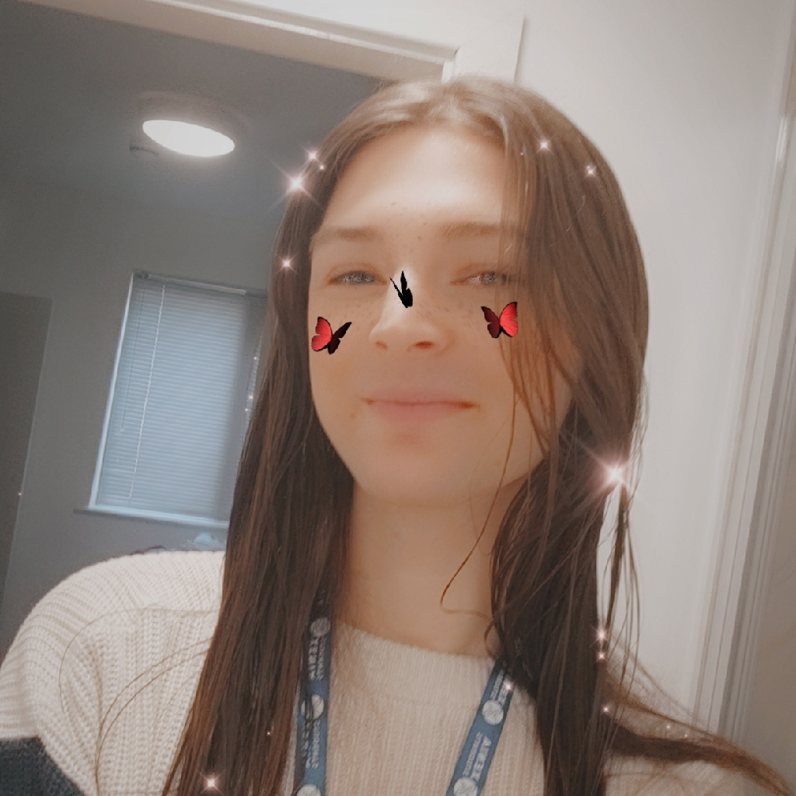

Game Development undergraduate with 10+ years of solo experience. Passionate problem-solver and mentor, with 2 years of peer support in academic settings.
I’m a technically skilled and self-driven Game Development undergraduate with a passion for solving problems and building engaging systems. With over 10 years of independent experience, I’ve developed a deep understanding of game architecture and a strong interest in supporting and mentoring others, including two years of peer-assisted academic support.
Specialized in backend systems, procedural generation, and gameplay programming using Unity. Published Ludum Dare entry; experienced in C#, Java, Python, and VR prototyping.
Created multiple mods with over 3.1M downloads on CurseForge. Focused on system logic, updates, and large-scale integration.
Create my own Custom Tools to solve development problems. Proficient in Unity, Blender and Git.